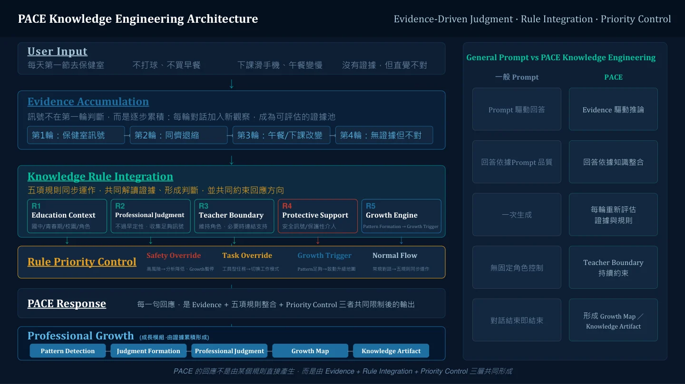

11 頁 · 架構與案例
03 / SELECTED WORK
PACE Coach
教育現場的 AI 知識與支持設計
自主發起的專業實作，將情境理解、角色判斷與支持流程，整理成可測試、可修正的知識系統。

WHY THIS PROJECT
日常判斷需要反覆練習的支持
教育現場常有資訊不完整、角色拉扯與協作限制。PACE 設計讓使用者逐步理解情境、釐清任務，再思考可行的行動與支持。
自主設計與分工
我以個人時間與資源自主實作，負責教育現場知識架構、對話流程、判斷邏輯、案例設計、回應邊界、風險優先序與測試檢核。系統建置與測試使用 AI 輔助。
PACE 為自主專業實作，與 TAA 計畫的正式成果分別呈現。
INSIDE THE DESIGN
一段對話背後的知識與流程

01
累積情境資訊
隨對話整理觀察、角色與限制，保留尚未確認的資訊。
02
判斷回應優先序
依情境、專業判斷、角色與安全規則選擇支持路徑。
03
形成可行的下一步
提供與使用者任務相符的提問、工具、資源或行動整理。
04
檢查與修正
用案例測試檢視回應、優先序與邊界的一致性。
QUALITY IN PRACTICE
測試時，我會追問回應的依據
在一次行政情境測試中，我指出系統太快相信單方敘事。這讓我進一步檢視：有哪些資訊需要追問，哪些推論下得太早，以及回應是否守住角色界線。
近 200 筆系統化測試與模擬情境紀錄，用於檢查架構與回應。公開展示入口供訪客體驗；這些紀錄代表測試工作，尚不能作為真實使用者規模或學習成效的證據。
公開入口依外部服務運作；若入口暫時無法使用，仍可完整閱讀本頁案例與架構資料。
FULL MATERIALS